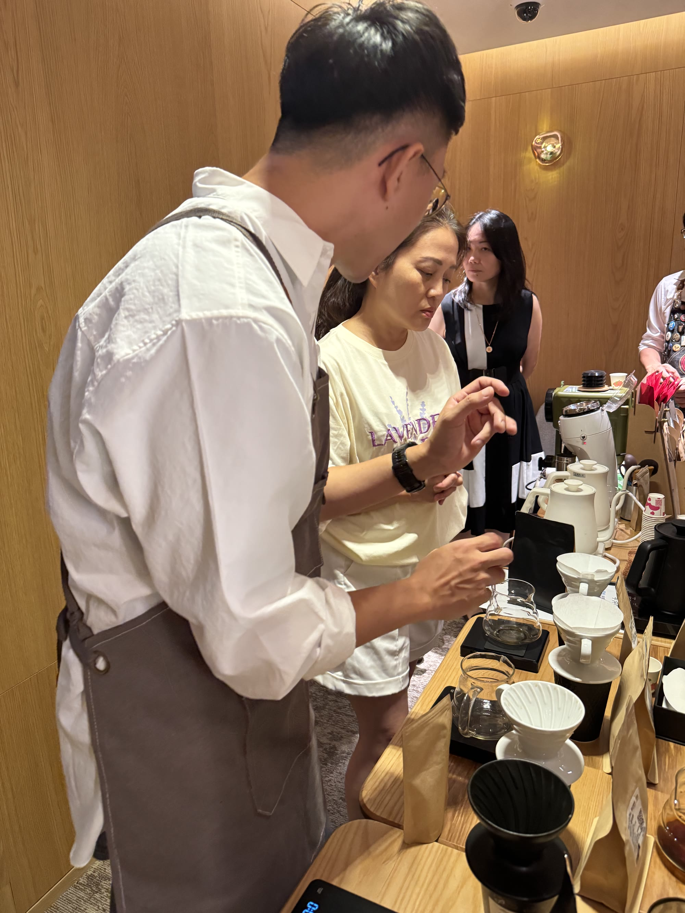

咖啡，寫進日常。
一杯慢慢沖的咖啡，
一點留給自己的時間。
買自己喜歡的豆，煮自己的風格。
翻開下一頁掌握技巧，
你就是自己的咖啡師。
江湖一點訣，從準備器材、注水到品飲，
把手沖的關鍵學清楚，就能慢慢沖出自己的風格。

真實課堂，親手練習。好好手沖，
沖得懂，也沖得好。
從手沖 SOP，到粕谷哲的 4:6 沖法；看懂水溫、研磨刻度、豆量與時間，也學會挑豆。
- 時間
- 四小時
- 費用
- NT$1,800／人
- 地點
- 林口／樹林／土城
- 上課方式
- 零經驗可參加，一人也可開班
帶回家：SOP 學習卡，以及一本可以寫滿筆記的講義。
今天的你，
想喝哪一種心情？
從喜歡的味道開始，
找一款想帶回家的咖啡。
正在翻開咖啡菜單…
翻翻熟豆菜單
豆款、價格與供應，透過 LINE 確認。
目前豆款與圖片為選品展示；實際販售內容依 LINE 確認。
日記裡的人，
也是陪你練習的人。
我們是露露與阿勳。